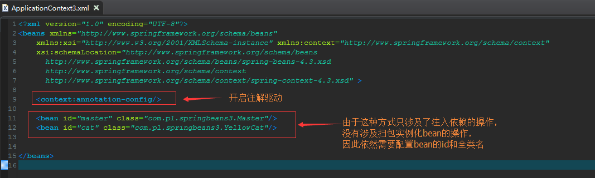
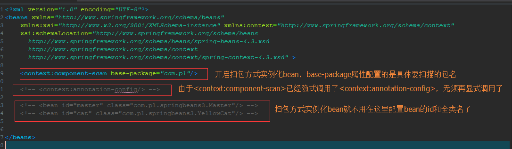
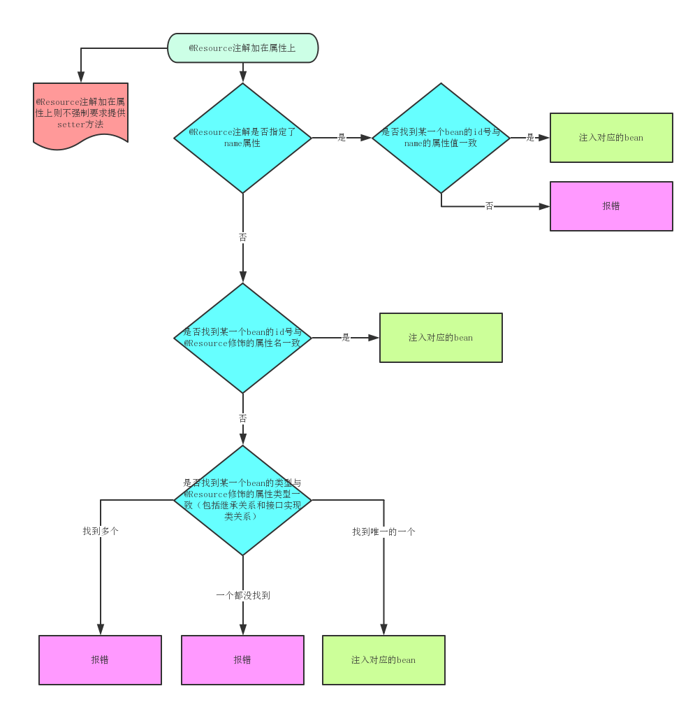
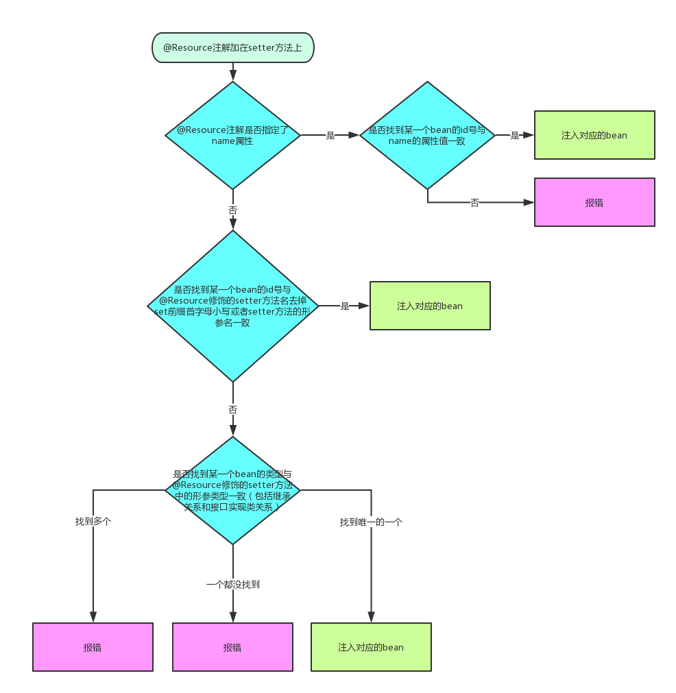
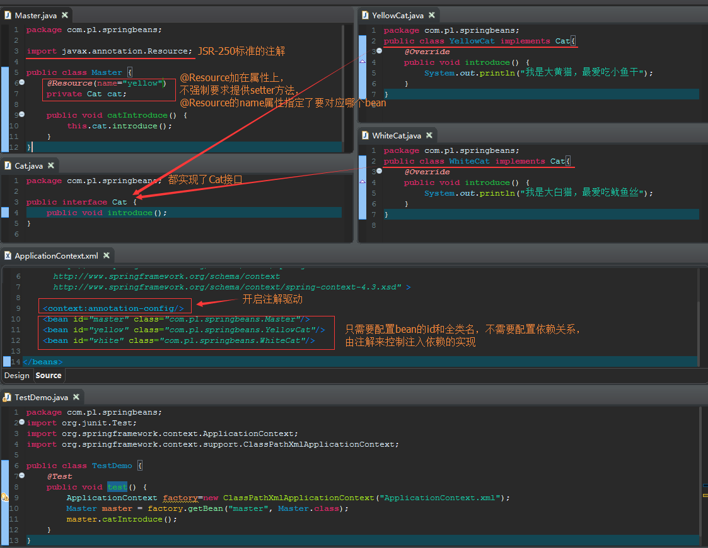
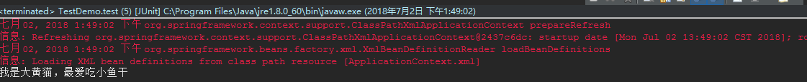
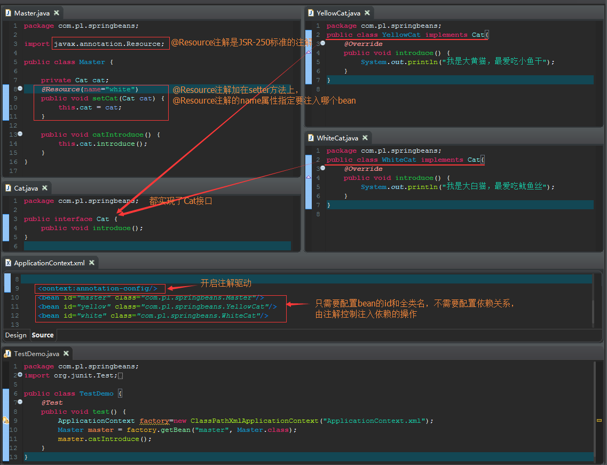
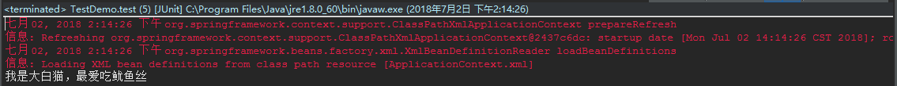
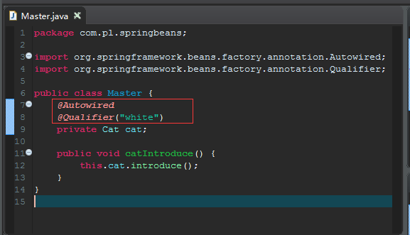

如何开启注解驱动
只是需要注入依赖的相关操作的时候（参考官方文档7.9 Annotation-based container configuration）
只需要在ApplicationContext.xml文件中加入<context:annotation-config/>元素,注意一点的是，这种方式依然需要在ApplicationContext.xml文件中配置bean的id和类的全名以供spring实例化bean

不仅需要注入依赖的相关操作，而且需要扫包实例化bean的时候（参考官方文档7.10.3 Automatically detecting classes and registering bean definitions）
只需要在ApplicationContext.xml文件中加入<context:component-scan/>元素,注意一点的是，开启<context:component-scan/>元素的时候以及隐式开启了<context:annotation-config/>元素的相关操作，因此无需再显式调用<context:annotation-config/>元素了

注入依赖操作的相关注解（@Resource和@Autowired）
@Resource注解
@Resource并不是spring框架本身提供的注解，而是JSR-250标准的注解，这个注解本身已经包含在javase6及以上版本中，因此使用这个注解的时候不需要额外去导包
@Resource注解可以加在属性上也可以加在setter方法上（如果是加在属性上的话则不需要提供setter方法）


示例一：@Resource加在属性上


示例二：@Resource加在setter方法上


@Autowired注解
@Autowired注解是spring框架本身提供的注解，使用方法与@Resource注解基本一致。注意一点的是，@Autowired注解没有name属性，它通过@Qualifier("要注入的bean的id号")这种方式来指定要注入的bean

bean实例化操作的相关注解（扫包）
- @Component
- @Controller
- @Service
- @Repository